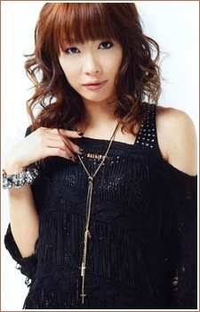

Sachi Kokuryu is a Japanese voice actress. She is affiliated Gekidan Himawari. She has voiced in Gintama, Seven Deadly Sins and Attack on Titans.
- Gender: Female
- Birthday: July 9, 1984
- Hometown: Tokyo, Japan
- Husband: Shiozaki Kosoi

|

|
|---|
|  |
Sachi Kokuryu is a Japanese voice actress. She is affiliated Gekidan Himawari. She has voiced in Gintama, Seven Deadly Sins and Attack on Titans.
|
|---|
 |
Arthur Pendragon |
|
Arthur Pendragon is King of Camelot. He is a polite who is still adjusting to his role as king. He takes responsibilites very seriously. |
 |
Professor Burnet |
|
Professor Burnet is a researcher from the Alola region. Her research specializes in the relationship between Pokemon and other dimensions. She is friends with Doctor Fennel and the wife of Professor Kukui. She is a well respected research who specializes in Ultra Wormholes. Her intelligence and techinal knowledge is impressive. Her appoarchable and positive attitude makes her instantly likable. After getting married to Kukui, she became a motherly figure to Ash. |
Go Back to Main Page |
Go Back to Homepage |
|
|
|
OR |
|